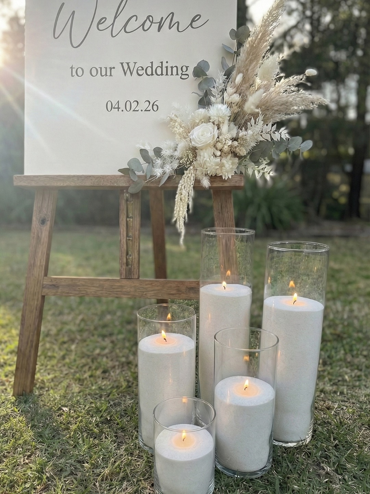

Sand Wax Candles vs Pillar Candles for Weddings: What’s the Difference?
April 19, 2026
Both sand wax candles and pillar candles can create a beautiful candlelit look for a wedding. The difference is not that one is automatically right and the other is wrong. It is more that they work a little differently in practice, and some setups will suit one option better than another.
If you are comparing candle styles for your wedding, it helps to look at both the visual side and the practical side. That usually makes the decision much clearer.
Comparing your options? You can check your date and get a quote for a ready-to-light setup here.
What are pillar candles?
Pillar candles are the classic solid candles many people already recognise from weddings, dinners, and event styling. They are usually freestanding or placed on holders, plates, or within lantern-style setups depending on the look you want.
They can work well for couples who like a more traditional candle look or who already have a styling plan built around specific holders or decor pieces.
What are sand wax candles?
Sand wax candles use wax presented in a loose, sand-like form rather than one solid pillar shape. At Lustre Hire, the candles are sand wax candles in glass vessels, pre-filled and ready to light.
Lustre Hire is a DIY candle hire business in Perth, with pickup from Bull Creek, so couples handle the pickup, styling, and return themselves while using a setup that is already prepared for them.
The visual difference
Visually, both options can look beautiful. Pillar candles often suit couples who want a classic, familiar candle style. Depending on the holder, they can feel soft, romantic, and timeless.
Sand wax candles in glass vessels can give a cleaner, more modern, styled look that works very well for weddings. Because the vessels and fill are consistent, the overall setup can feel neat and cohesive across tables, bars, welcome areas, and other styling spots.
Neither look is better in every situation. It depends on the style of wedding you are planning and how polished or minimal you want the final layout to feel.
The practical difference
Once you move past appearance, the practical differences are often what matter most for DIY couples.
Setup: Pillar candles may involve more separate pieces depending on your styling approach. Pre-filled sand wax candles in glass vessels are already prepared, which can make setup feel simpler.
Consistency of look: If you are sourcing pillar candles and holders yourself, the final look depends on how well everything matches. Pre-filled candle vessels can make it easier to keep the styling consistent.
Flexibility: Both can be styled in different ways, but sand wax candles in glass vessels can be easy to move around different table layouts and feature areas without needing lots of separate accessories.
Transport: Any candle setup needs careful transport, but pre-packed ready-to-light candles can make planning feel more straightforward.
Cleanup: With a hire setup, the post-event process can feel simpler because the main focus is repacking and returning, rather than dealing with every candle item individually.
Which one is easier for a DIY wedding?
For couples who want a simple, ready-to-go option, pre-filled sand wax candles can make the process easier because the styling is already prepared. That does not mean pillar candles cannot work for DIY. It just means they can involve more sourcing, matching, and prep depending on how you are approaching the look.
If you are aiming for something hands-on but manageable, a ready-to-light option can remove a few steps without taking away your control over where the candles go or how the tables are styled.
If you want a clearer feel for the practical side, you can also read more about how it works and the return process on our How to Return page.
When pillar candles might still suit
Pillar candles may still be the right choice for some couples, especially if your venue, styling vision, or decor plan already suits that look. If you have specific holders in mind, want a more traditional candle presentation, or are building the tablescape around other styling pieces, pillar candles may fit naturally.
They may also suit couples who are comfortable taking on a bit more sourcing or setup in exchange for a very specific visual direction.
What to consider before choosing
Before deciding, it can help to ask yourself:
• What overall styling look do I want?
• How much setup do I want to do myself?
• Do I want something ready to go?
• How much flexibility do I need across tables and feature areas?
• How much cleanup do I want after the event?
Those questions usually make the decision easier than focusing on candle type alone.
Final reassurance
Both sand wax candles and pillar candles can work beautifully for a wedding. The best option is usually the one that feels easiest to manage and most aligned with your overall wedding style.
If you are looking for a ready-to-light candle hire option in Perth, the next step is to check your date, get a quote, and book online when you are ready.
Ready to compare in real terms?
Check your date, get a quote, and see whether a ready-to-light candle setup suits your wedding best.
Check Availability